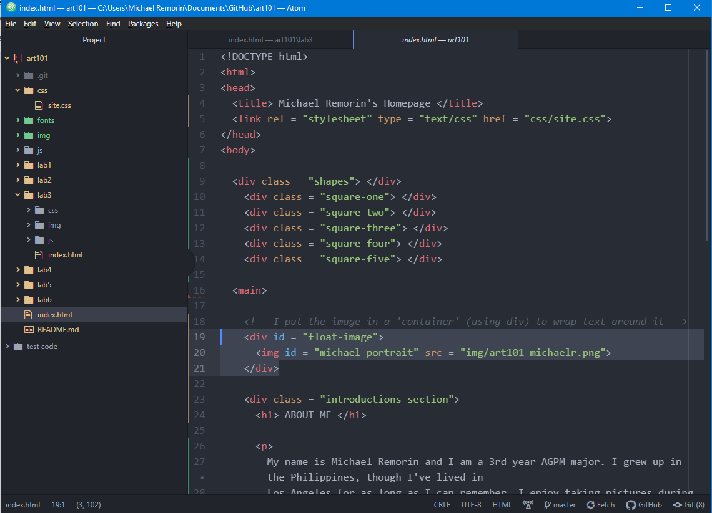

For this lab, we learned how to create a good local file structure. The key notes we took away from the lab is to be organized and take specific precautions so that our directory can work on any operating systems, and also be readable for anyone who views it. We also learned how to create a 'homepage', and link our future labs on that homepage.
The lab itself was pretty easy to follow thanks to the clear instructions given on canvas.
Because everything was easy to follow, I wanted to try making my homepage look nice. This is where a lot of my time went. I wanted a minimalist design using dark grey and white, with borders around certain elements. After a couple of iterations, I decided I also wanted to put my picture to the right of the text. I was very unfamiliar with CSS, so I had to constantly look up references and guides. I made the homepage more complex, which led to a couple of hiccups.
I had a hard time making the image go to the right, and I was unfamiliar with constricting the text to stay on the left side. I didn't enjoy the native fonts that are provided by CSS, so I also had to learn how to import my own fonts locally. Lastly, I had a rough time adding shapes and making them rotate to make my homepage look a bit more 'interactive'.
I learned how to make the image go to the right by creating a 'container' for it, then making it float using CSS. I'm not quite sure if this was the best way to do it, but it was the solution that worked for me. I learned how to locally import my own files. In my art101 directory I added a new folder for fonts, in order to stay consistent with the organization of the project. The thing I was most proud of was adding rotating shapes that made my homepage look more lively. Through this whole process I learned about absolute positioning, animations and keyframes through CSS, as well as the importance of CSS and HTML working together as a whole to create a decent looking website.
